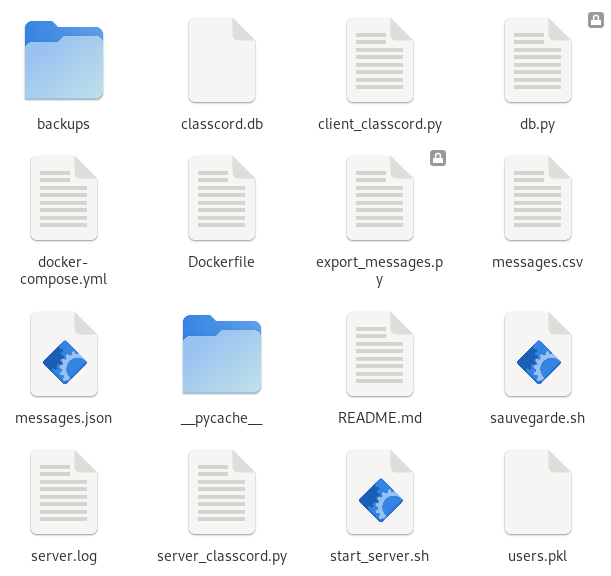
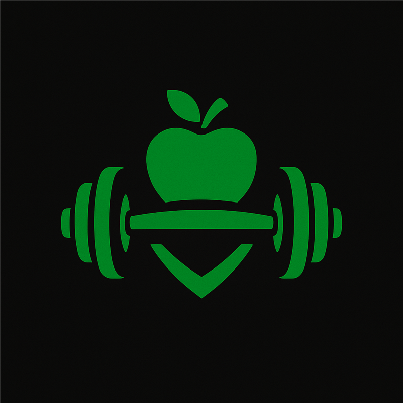

Windows Server & Virtualisation
Installation et configuration d’un serveur Windows Server sur VirtualBox (Oracle). Gestion des rôles AD DS, DNS, GPO et services de fichiers.
Windows Server
Active Directory
Oracle VirtualBox

ClassCord Server
Serveur de chat TCP multi-clients sécurisé, déployé avec Docker et systemd, interopérable avec les clients Java SLAM. Projet réalisé en binôme dans le cadre du BTS SIO.
Python
Docker
Linux
systemd
fail2ban
SQLite

CinéZone
Un site web de streaming développé en HTML/CSS/JS et hébergé en local sur un serveur Debian.
HTML
JS
Bootstrap
Debian
WinSCP

NutriFit
Assistant nutritionnel connecté à une API alimentaire. Interface responsive en Bootstrap.
JS
API
Bootstrap
Debian
D'autres projets innovants arrivent très bientôt. Restez connecté !